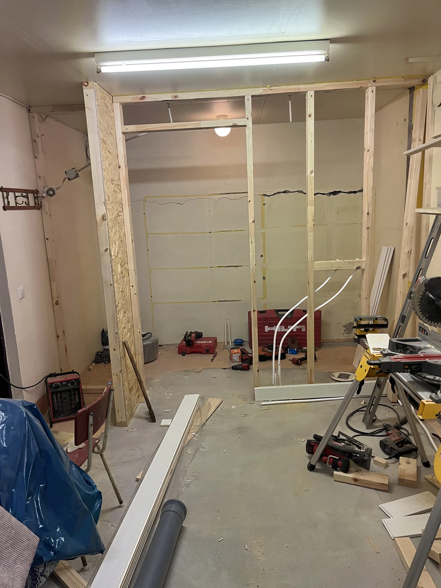
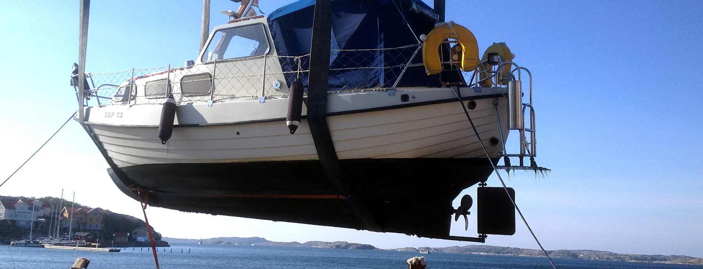

Våra tjänster
För huset.
För båten. För lyftet.
Ett företag med flera sidor. Här hittar du hjälp för byggprojektet, båtsäsongen och de tyngre lyften.

Byggnation
Nybyggnation, tillbyggnader och snickerier — från enskilda uppdrag till totalentreprenad.
Läs mer
Renovering
Ta hand om huset med allt från tak- och fönsterbyten till finsnickeri.
Läs mer
Båtservice & vinterförvaring
Båt- och motorservice, båtsnickerier och vinterförvaring i tempererade lokaler i Ellös.
Läs mer
Mobilkran & lyft
Lyfthjälp för husmontage, båtar och andra tunga uppdrag.
Läs merDitt nästa steg
Berätta vad du
har i tankarna.
Vi hjälper dig att ta nästa steg. Ring oss eller beskriv ditt projekt i ett mejl.